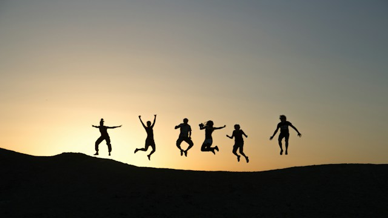
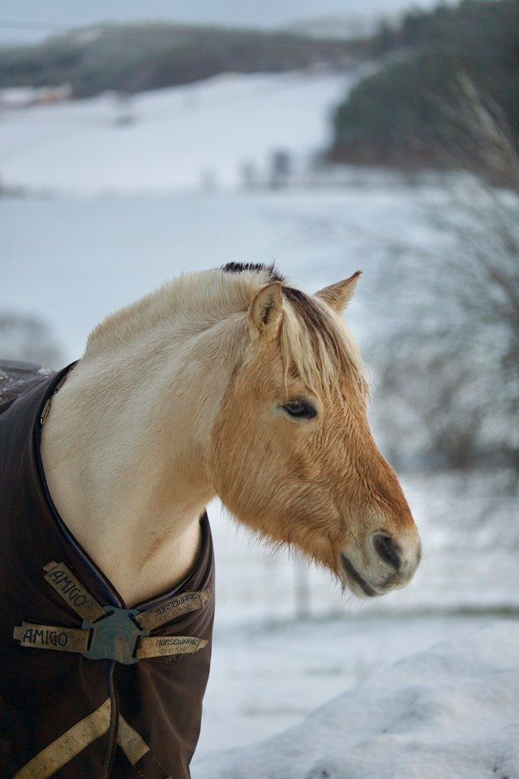
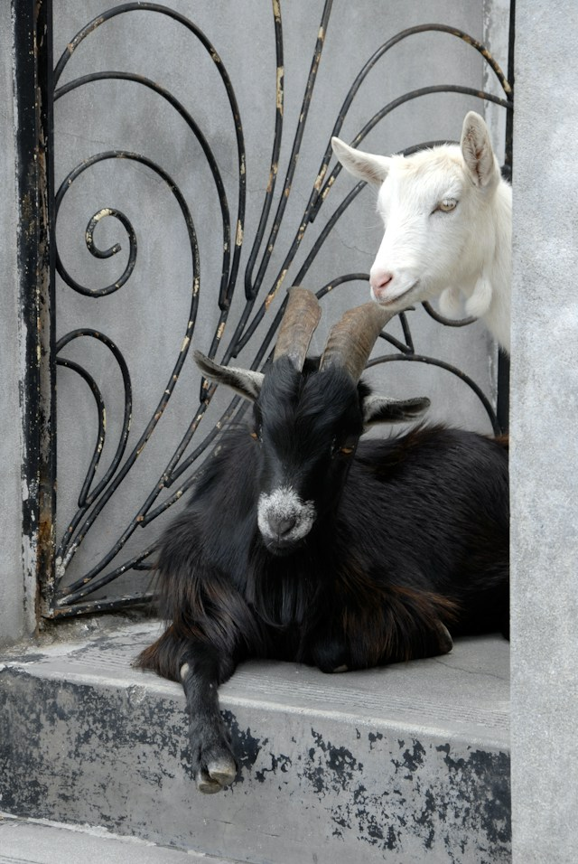
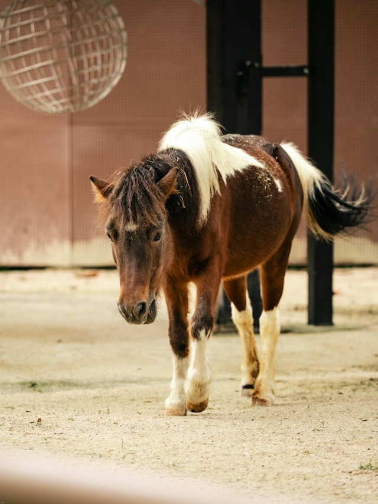
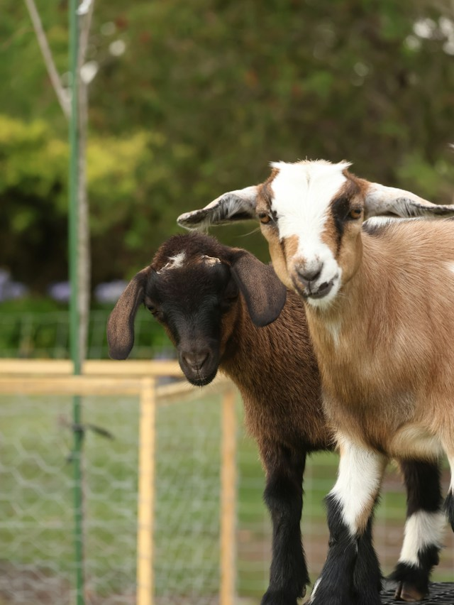
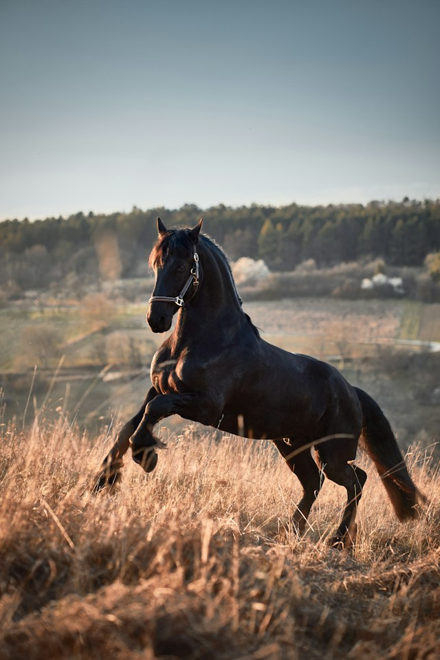
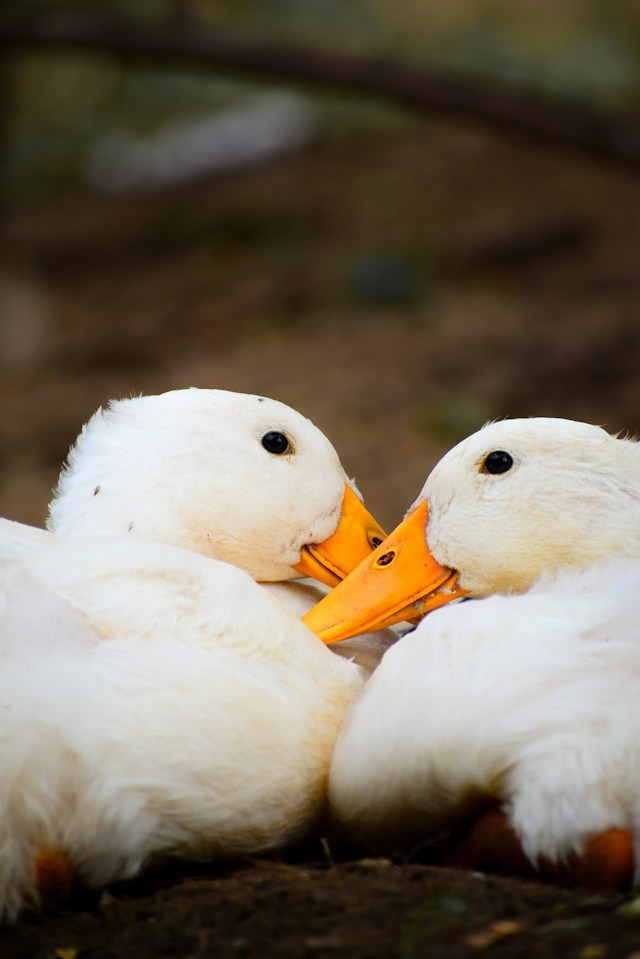
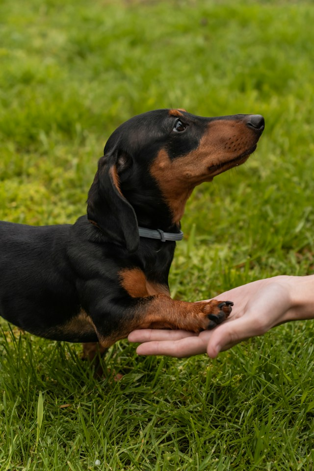
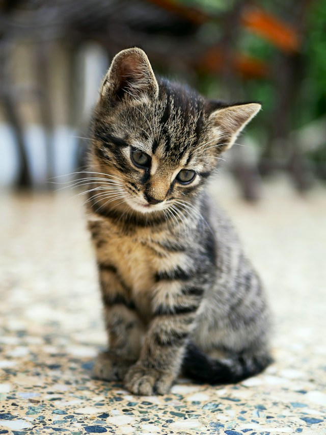

Foto: Timon Studler on UnsplashHvem er vi?
Vi er tre generasjoner som bor her nå, og det har vært drift på gården i flere generasjoner bakover. Her på Skåtatunet har vi utelukkende fokus på dyrevelferd. Flere av dyrene våre er omplasseringsdyr, eller reddet fra avliving. Når de kommer hit skal de få være her resten av livet, og de skal få være dyr.
Vi har lang erfaring med ulike dyr, og vi strekker oss langt for å fylle behovene deres.
Dyrene våre

Foto: Kristin O Karlsen on UnsplashBrage
Brage er 26 år gammel, og har vært her i 16 år. Man finner ikke tryggere og roligere hest.

Foto: Janine Joles on UnsplashSnehvit og Sothvit
To søstre som skulle avlives etter endt melkeproduksjon. Nå skal de bo her resten av livet.

Foto: Jinhan Moon on UnsplashBerry
Berry er en liten rampegutt. Han er for liten til å bli ridd, men blir gjerne med på leietur eller kjøretur.

Foto: Noah Pienaar on UnsplashStore- og lille bukkene Bruse
Disse sjarmørene skulle avlives like etter fødsel, men de fikk heller komme til oss.

Foto: Timo Trilk on UnsplashLord
Lord er en pensjonert dressurhest som kom til oss i stedet for å bli avlivet. Nå lever han livet som turhest og trives svært godt med det.

Foto: Pavan Kumar Nagendla on UnsplashTuttifrutti og Lollipop
To trivelige damer som jobber som sneglespisere. De setter stor pris på litt ekstra kos.

Foto: Maria Sime on UnsplashMelina
Melina sine første tre år var vonde, men nå lever hun livets glade dager her med oss.

Foto: Edgar on UnsplashTiger
Tiger var forlatt ute i skogen. Han var veldig syk og veldig redd. Han kan bruke litt tid på å bli trygg på folk, men er veldig hengiven når han har blitt trygg.